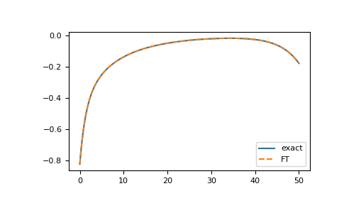
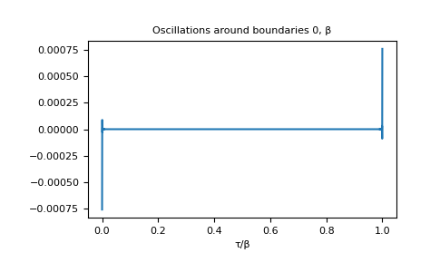
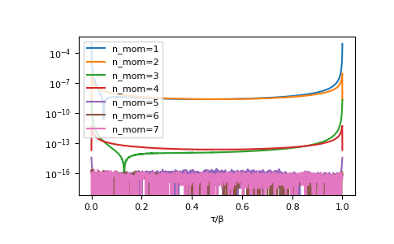
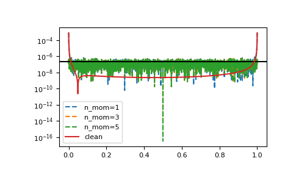

gftool.fourier.iw2tau¶
-
gftool.fourier.iw2tau(gf_iw, beta, moments=(1.0, ), fourier=<function iw2tau_dft>, n_fit=0)[source]¶ Discrete Fourier transform of the Hermitian Green’s function gf_iw.
Fourier transformation of a fermionic Matsubara Green’s function to imaginary-time domain. We assume a Hermitian Green’s function gf_iw, i.e. \(G(-iω_n) = G^*(iω_n)\), which is the case for commutator Green’s functions \(G_{AB}(τ) = ⟨A(τ)B⟩\) with \(A = B^†\). The Fourier transform gf_tau is then real.
- Parameters
- gf_iw(…, N_iw) complex np.ndarray
The Green’s function at positive fermionic Matsubara frequencies \(iω_n\).
- betafloat
The inverse temperature \(beta = 1/k_B T\).
- moments(…, m) float array_like
High-frequency moments of gf_iw.
- fourier{
iw2tau_dft,iw2tau_dft_soft}, optional Back-end to perform the actual Fourier transformation.
- n_fitint, optional
Number of additionally fitted moments (in fact, gf_iw is fitted, not not directly moments).
- Returns
- gf_tau(…, 2*N_iw + 1) float np.ndarray
The Fourier transform of gf_iw for imaginary times \(τ \in [0, β]\).
See also
iw2tau_dftBack-end: plain implementation of Fourier transform
iw2tau_dft_softBack-end: Fourier transform with artificial softening of oszillations
pole_gf_from_momentsFunction handling the given moments
Notes
For accurate an accurate Fourier transform, it is necessary, that gf_iw has already reached it’s high-frequency behaviour, which need to be included explicitly. Therefore, the accuracy of the FT depends implicitely on the bandwidth!
Examples
>>> BETA = 50 >>> iws = gt.matsubara_frequencies(range(1024), beta=BETA) >>> tau = np.linspace(0, BETA, num=2*iws.size + 1, endpoint=True)
>>> poles = 2*np.random.random(10) - 1 # partially filled >>> weights = np.random.random(10) >>> weights = weights/np.sum(weights) >>> gf_iw = gt.pole_gf_z(iws, poles=poles, weights=weights) >>> gf_dft = gt.fourier.iw2tau(gf_iw, beta=BETA) >>> gf_iw.size, gf_dft.size (1024, 2049) >>> gf_tau = gt.pole_gf_tau(tau, poles=poles, weights=weights, beta=BETA)
>>> import matplotlib.pyplot as plt >>> __ = plt.plot(tau, gf_tau, label='exact') >>> __ = plt.plot(tau, gf_dft, '--', label='FT') >>> __ = plt.legend() >>> plt.show()
>>> __ = plt.title('Oscillations around boundaries 0, β') >>> __ = plt.plot(tau/BETA, gf_tau - gf_dft) >>> __ = plt.xlabel('τ/β') >>> plt.show()
Results can be drastically improved giving high-frequency moments, this reduces the truncation error.
>>> mom = np.sum(weights[:, np.newaxis] * poles[:, np.newaxis]**range(8), axis=0) >>> for n in range(1, 8): ... gf = gt.fourier.iw2tau(gf_iw, moments=mom[:n], beta=BETA) ... __ = plt.plot(tau/BETA, abs(gf_tau - gf), label=f'n_mom={n}') >>> __ = plt.legend() >>> __ = plt.xlabel('τ/β') >>> plt.yscale('log') >>> plt.show()
The method is resistant against noise:
>>> magnitude = 2e-7 >>> noise = np.random.normal(scale=magnitude, size=gf_iw.size) >>> for n in range(1, 7, 2): ... gf = gt.fourier.iw2tau(gf_iw+noise, moments=mom[:n], beta=BETA) ... __ = plt.plot(tau/BETA, abs(gf_tau - gf), '--', label=f'n_mom={n}') >>> __ = plt.axhline(magnitude, color='black') >>> __ = plt.plot(tau/BETA, abs(gf_tau - gf_dft), label='clean') >>> __ = plt.legend() >>> plt.yscale('log') >>> plt.show()

{kind=link}
{kind=link}
{kind=link}
{kind=link}